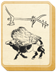

Requires
- Buildings:

- Arts: 
Basic Building Statistics (can be modified by difficulty level, arts, skills, traits and retainers)
- Cost: 4200
- +700 to wealth from farms in this province
- +1 per turn to town growth from commerce within this province
- Provides food: 4
Description
Empty bellies are never found in loyal men.
Good farmers always try to get the most of the land that they are working. By using water cleverly, and making sure that it is not wasted, marginal land can be cultivated, effectively increasing the size and effectiveness of farms. The end result is that a province will produce more food and wealth. Japan is a very, very hilly country. It was also densely wooded, and that left little good flat land for food production. By cleverly diverting streams, and using terraced paddy fields, almost every patch of ground in Japan that could be used for growing food was eventually cultivated. The result was a very large, relatively well fed population by medieval standards. There were probably more people in Japan at the time of the Gempei War than in the whole of western Europe.